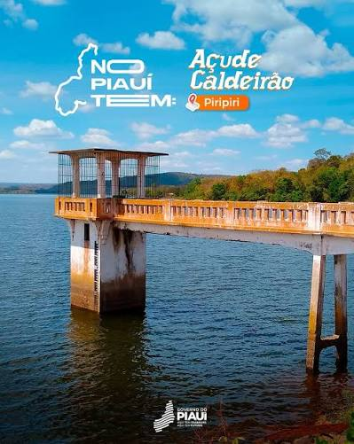

O Açude Caldeirão é um dos principais cartões-postais de Piripiri, no estado do Piauí. Além de sua importância para o abastecimento de água da região, o local é muito procurado por moradores e turistas por oferecer belas paisagens e um ambiente agradável para momentos de lazer. Construído durante o século XX, o açude teve um papel importante no desenvolvimento da cidade, contribuindo para o armazenamento de água em uma região marcada por períodos de seca. Com o passar dos anos, o espaço tornou-se também um ponto de encontro para a população e um atrativo turístico.
É um excelente lugar para passeios em família, caminhadas e para apreciar o pôr do sol.